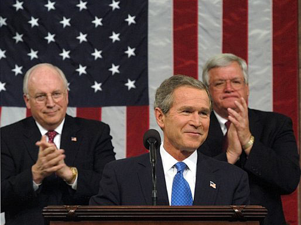

The requirements for the offices of the presidency and vice presidency are outlined in Article II, Section 1, of the Constitution.
The president is elected to a four-year term of office and may serve two terms total. The Twenty-Fifth Amendment, passed in 1967, established procedures to follow in case of presidential incapacity, death, or resignation, and when filling a vacant vice-presidency.
Requirements to become president:

The Constitution doesn’t give much power to the vice president. The only formal duty is to preside over the Senate in case of a tie vote. Vice presidents have historically been chosen by the presidential candidates to balance the ticket by attracting groups of voters or appeasing the party. In many ways, it can be accurately said that a vice president only has as much power as the president allocates to him or her. There have been examples of a president giving duties to a vice president. For example, George W. Bush relied on the help and advice of his vice president, Dick Cheney, during his first term in office.
When the president is unable to communicate, the vice president and a majority of the cabinet can declare that fact to Congress. This is part of keeping the military under civilian control. It specifies who would take control of the country if there’s an attack that takes out the president and vice president.